Publications
Journal Publications
Dense 4D nanoscale reconstruction of living brain tissue
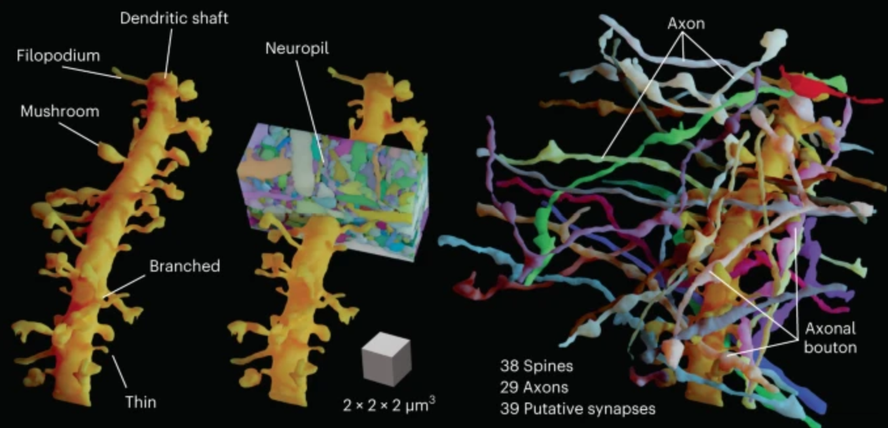 Author(s): Velicky, P., Miguel, E., Michalska, J.M. et al.Published in: Nat. Methods 20, 1256–1265 (2023).
Link to publication
Mixing Yarns and Triangles in Cloth Simulation
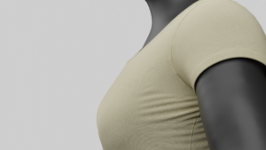 Author(s): Casafranca, J. J., Cirio, G., Rodriguez, A., Miguel, E., Otaduy, M. A.Published in: Computer Graphics Forum Vol. 39(2).
Link to publication
FlexMaps: Computational Design of Flat Flexible Shells for Shaping 3D Objects
 Author(s): Malomo, L., Perez, J., Iarussi, E., Pietroni, N., Miguel, E., Cignoni, P., Bickel, B.
Author(s): Malomo, L., Perez, J., Iarussi, E., Pietroni, N., Miguel, E., Cignoni, P., Bickel, B.Published in: ACM Transactions on Graphics, Vol. 37(6) (SIGGRAPH Asia 2018).
Link to publication
CurveUps: Shaping Objects from Flat Plates with Tension-Actuated Curvature
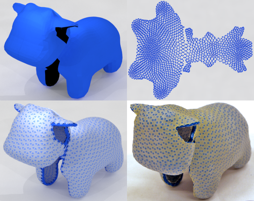 Author(s): Guseinov R., Miguel E., Bickel, B.Published in: ACM Transactions on Graphics, Vol. 36(4) (SIGGRAPH 2017).
Link to publication
Computational Design of Stable Planar-Rod Structures
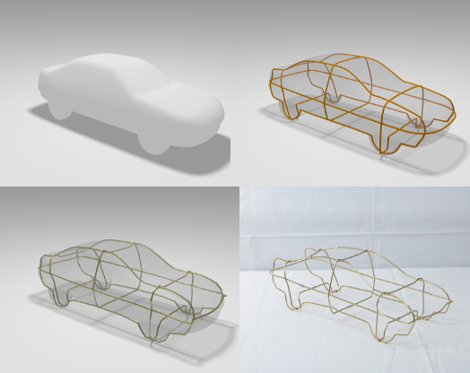 Author(s): Miguel, E., Lepoutre, M., Bickel, B.Published in: ACM Transactions on Graphics, Vol. 35(4) (SIGGRAPH 2016).
Link to publication
Modeling and Estimation of Energy-Based Hyperelastic Objects
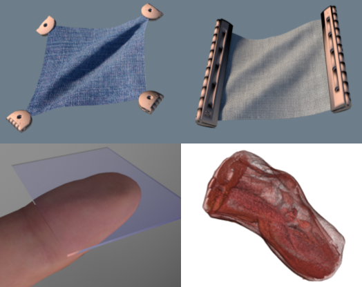 Author(s): Miguel, E., Miraut, D., Otaduy, M.A.Published in: Computer Graphics Forum (Proc. of Eurographics), Volume 35, Number 2, 2016.
Link to publication
Modeling and Estimation of Intenal Friction in Cloth
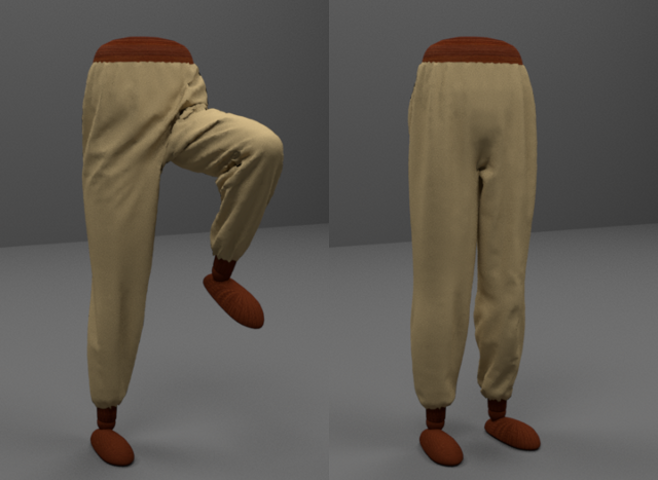 Author(s): Miguel, E., Tamstorf, R., Bradley, D., Schvartzman, S.C., Thomaszewsky, B., Bickel, B., Matusik, W., Marschner, S., Otaduy, M.A.Published in: ACM Transactions on Graphics, Vol. 32 (SIGGRAPH Asia 2013).
Link to publication
Data-Driven Estimation of Cloth Simulation Models
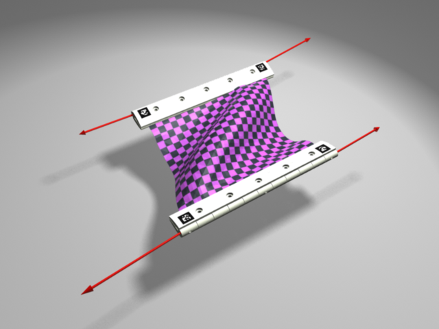 Author(s): Miguel, E., Bradley, D.,Thomaszewsky, B., Bickel, B., Matusik, W., Otaduy, M.A., Marschner, S.Published in: Computer Graphics Forum, Vol. 31 (2) (Proc. of Eurographics 2012).
Link to publication
Conference Publications
Efficient FEM-based simulation of soft robots modeled as kinematic chains
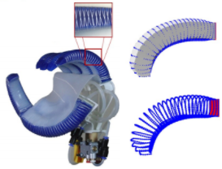 Author(s): Pozzi, M., Miguel, E., Deimel, R., Malvezzi, M., Bickel, B., Brock, O., Prattichizzo, D.Published in: IEEE International Conference on Robotics and Automation 2018.
Link to publication
Characterization of Nonlinear Finger Pad Mechanics for Tactile Rendering
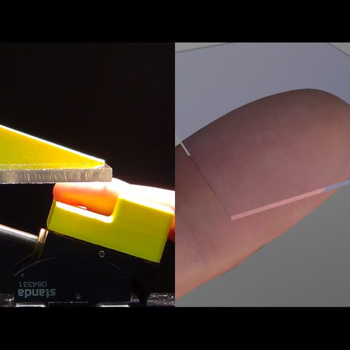 Author(s): Miguel, E., DAngelo, M.L., Cannella, F., Bianchi, M., Memeo, M., Bicchi, A., Caldwell, D.G., Otaduy, M.A.Published in: Proc. of World Haptics Conference, 2015.
Link to publication
Towards Cloth-Manipulating Characters
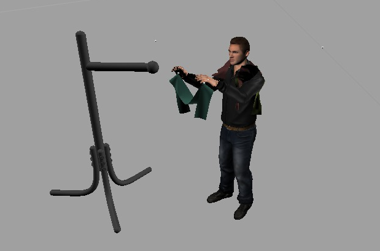 Author(s): Miguel, E., Feng, A., Xu, Y. and Shapiro, A.Published in: Short paper in Computer Animation and Social Agents 2014, Houston.
Link to publication
Efficient Simulation of Contact Between Rigid and Deformable Objects
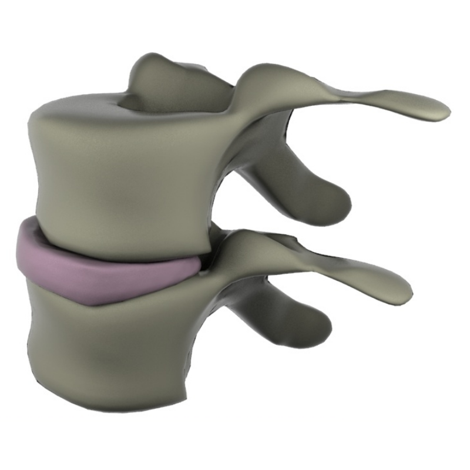 Author(s): Miguel, E. and Otaduy, M.A.Published in: Proc. of Multibody Dynamics, Brussels, July 2011.
Link to publication
Modeling and Simulation of a Human Shoulder for Interactive Medical Applications
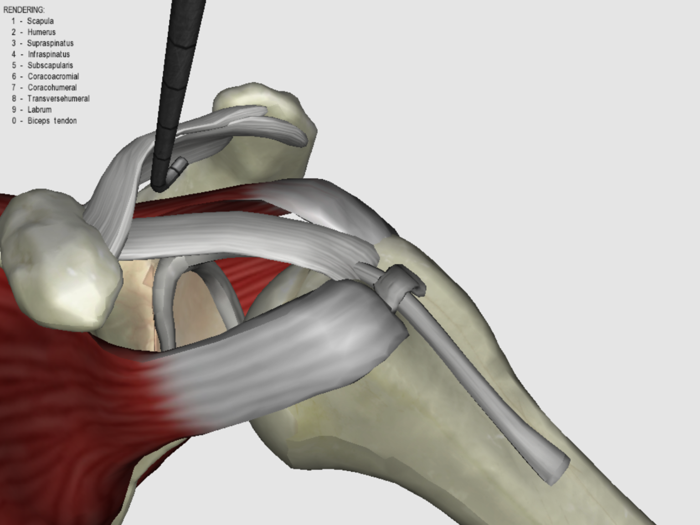 Author(s): Otaduy, M.A., Garre, C., Gascon, J., Miguel, E., Perez, A.G., Zurdo, J.S.Published in: Proc. of CEIG (Spanish Computer Graphics Conference), September 2010.
Link to publication